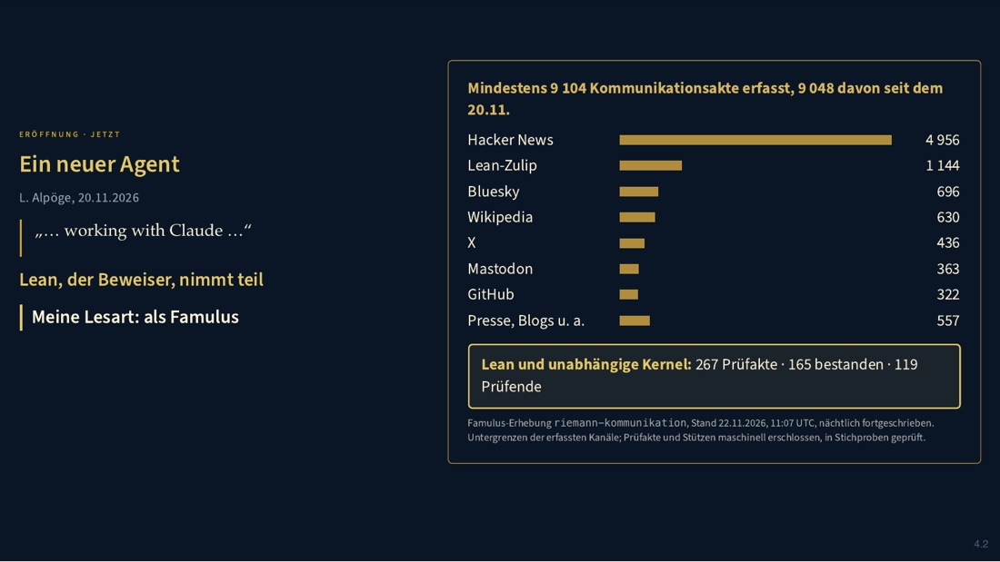
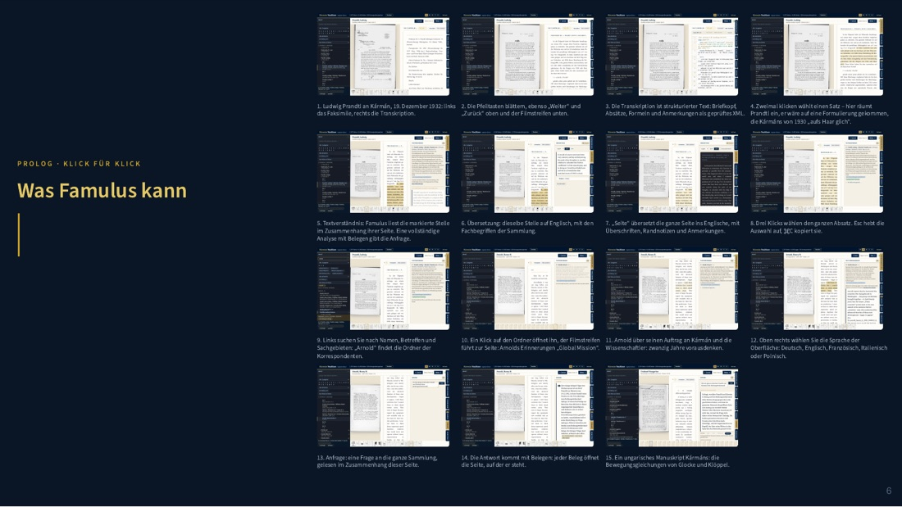
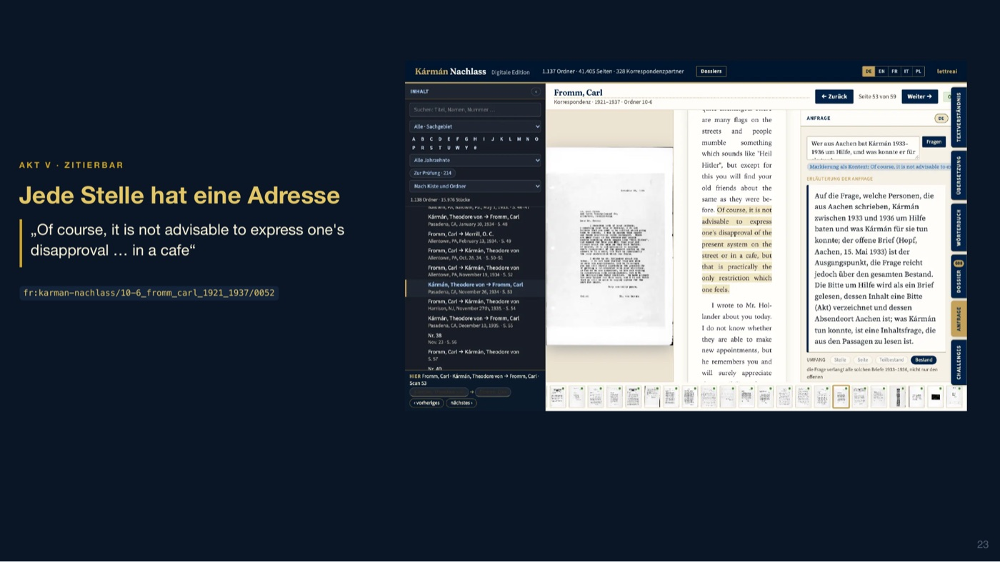
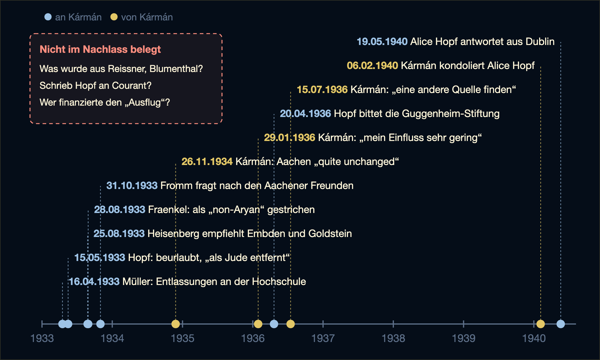
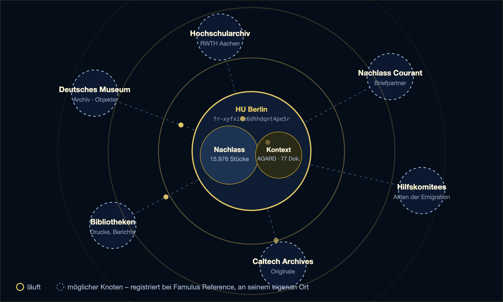

Het Kármán-archief, geïnventariseerd met Famulus
Famulus Deep Reading
Famulus Lectures · Nr. 1
Gerd Graßhoff · Philosophisches Institut, Humboldt-Universität zu Berlin; Forschungsinstitut, Deutsches Museum
Deutsches Museum, München, seminarzaal onderzoek · 23 november 2026 · Lezing in het Deutsches Museum
Geredigeerde versie van de lezing van 23 november 2026, vervaardigd met Famulus. Vertaling uit het Duits; de Duitse versie is maatgevend.
Licentie: CC BY-NC-ND 4.0 · Versie 1.0 (Entwurf) · Stand 2026-11-23
Citeervoorstel: Gerd Graßhoff: Het Kármán-archief, geïnventariseerd met Famulus. Famulus Deep Reading. Famulus Lectures 1, Deutsches Museum, München, seminarzaal onderzoek, 23 november 2026. https://famulus.lettre.ai/lectures/1/nl/
Opening
Dank u voor de mogelijkheid en voor het vroege bezoek op een maandagochtend. Ik probeer mij zeer geconcentreerd te beperken tot het punt dat ik u wil rapporteren en ter beoordeling wil voorleggen. Wij overwegen of wij een subsidieaanvraag op weg kunnen brengen om dat wat ik presenteer niet alleen als een techniek met een aha-effect te tonen, maar als een nuttig hulpmiddel voor het onderzoek, voor het museum en voor degenen die ermee werken. Daarvoor wil ik vandaag argumenteren. Ik zal de lezing opnemen om een conferentietool van Famulus voor te leggen: de opname wordt na afronding getranscribeerd, met de dia’s gecombineerd en zo gepubliceerd dat deelnemers de lezing met de dia’s geannoteerd kunnen lezen. In dit prototype lukt dat vandaag nog niet meteen.

Afb. 1 · De Kármán-nagelaten nalatenschap, met Famulus doorgenomen (Dia 3)
Ik baseer mij niet op de meest recente technologie, maar op de grote wetenschapshistorische traditie met Erasmus (→ Afb. 1). Ik heb mij in deze traditie geplaatst, en dat waarvoor ik wil argumenteren, wil ik helemaal geen KI noemen. Dat is eerst een kwestie van terminologie: waarover spreken wij. Wij spreken niet van agenten zoals Claude of andere gepersonaliseerde actoren, maar van iets dat ik Famulus wil noemen – in navolging van het taalgebruik van de renaissance en het humanisme bij Erasmus.
Erasmus gebruikt de uitdrukking Famulus in zijn werken. Wij zien hier Dürer in een van zijn onnavolgbare vermoedens van de terminologie: Erasmus met de rechterhand schrijvend, in de linkerhand houdt hij iets. Zoals altijd bij de gravures van Dürer is de grote vraag wat wij hier eigenlijk zien. Rechts schrijft hij duidelijk, links duid ik het als een inktpot – maar sta mij de grap toe om de metafoor verder te drijven: dat is in mijn lezing Famulus. Famulus is in het Latijn vertaald de helper. En wij weten uit vele brieven van Erasmus dat de Famulus de helper is, die zeer geleerd kan zijn.
Hij heeft een netwerk van helpers die hem toewerkten. In dit toewerken mochten zij alle competentie inbrengen, alleen één ding niet: een eigen wetenschappelijk oordeel bijdragen.

Afb. 2 · Riemann: vier dagen op alle kanalen (Dia 9)
Overgebracht op de activiteiten van de laatste vier dagen probeer ik hier nog eens op te nemen waarom in dat wat in de laatste vier dagen is gebeurd, met de verwijzing naar Riemanns theorema, wat in de laatste vier dagen in de wetenschapscommunity aan communicatiehandelingen plaatsvond (→ Afb. 2). Dat wordt live gemonitord. Ik heb een wetenschapsmonitor die alle publicaties, alle communicaties die überhaupt toegankelijk zijn, opneemt, documenteert en analyseert. Om te begrijpen, om te zien hoe dit proces van wetenschapscreatie functioneert. En hier is midden vorige week een aankondiging geweest dat het theorema, Riemanns theorema, bewezen is. Dat is eerst alleen een steile bewering, vooral wanneer men ziet dat het bewijs niet in conventionele wiskundige vorm is geleverd, maar door de inlevering van 250000 pagina’s gedrukte code.

Dat is het eerste probleem: wie controleert de code (→ Afb. 3)? Is dat al kennis? Natuurlijk niet. Maar – en dat is het proces dat ik hier toon – er vindt een levendig wetenschappelijk communicatieproces plaats dat uit dat wat na de aankondiging volgt, uiteindelijk iets voortbrengt waarvan ik overtuigd ben dat het zich ofwel als kennis ontpopt ofwel als een voorbarige aankondiging met lacunes die niet meer te dichten zijn. Hoe het spel afloopt, weten wij niet.
Ik wil de paralleliteit benutten: al in deze dialogen van de wetenschappers met de inzet van de techniek vinden wij uitspraken zoals in de eerste aankondiging: ja, ik heb dit bewijs gevonden, working with Claude. Wie is Claude? Claude is de technologie. Zij wordt op grond van de naamgeving door de Tropics gepersonaliseerd – precies dat wil ik vermijden, want het suggereert dat wij hier een wetenschappelijke actor hebben. Die hebben wij naar mijn lezing niet.
Lean, de bewijzer, is een wiskundige techniek van automatische bewijsvoering die hier wordt ingezet. Deze techniek heeft deze 250.000 pagina’s doorgewerkt en aangetoond dat dit bewijs sluitend en naar al het begrip van de inzet van deze technologie door de community correct is.
Wat is Famulus en wat kan het?
Proloog

Afb. 4 · Het Kármán-platform. Het archief omvat 1.066 mappen met 38.213 pagina’s en is met één klik als platform bereikbaar. (Dia 13)

Mijn lezing is: wat Lean voor de wiskunde is, wil ik als Famulus voor de geschiedenis van techniek en wetenschap introduceren (→ Afb. 4, Afb. 5). Dat is een grote aankondiging op een maandagochtend – vergeef het me, onder vrienden is dit mijn poging om de nek een beetje uit te steken. Om dat te laten zien, wil ik het verbinden met de publicatie van het Kármán-archief, zoals ik het heb bewerkt en ontsloten. Het archief dat u hier ziet, is in zoverre toegankelijk; er wordt nog aan gewerkt, zodat momenteel van 1066 boxen 328 volledig gedigitaliseerd zijn.
De machines draaien allemaal op de achtergrond en domineren mijn pensioen. We zitten immers op een derde, en in de komende twee weken worden naar verwachting alle resterende pagina’s gedigitaliseerd. U vindt hier al een automatische categorisering. U ziet dat dit archief ongeveer 204 correspondenten omvat, wat men in de inventaris niet ziet. De aantallen kunnen door de bewerking nog veranderen; dat is voorlopig.
240 papieren, 142 manuscripten van Kármán enzovoort. Octrooien, maar ook onderwerpen als turbines, tubuline, beoordelaarsfuncties, bruggen die door trillingsverschijnselen instortten, en dergelijke. Dat is gesystematiseerd en door Famulus al automatisch in categorieën onderverdeeld.
Dat is allemaal al in te zien en te gebruiken. U ziet aan de linkerkant van de website een registratuur die gefilterd kan worden door de categorieën, dus of het nu om manuscripten gaat, om correspondentie; dan zijn alle correspondentie opgevoerd, die kan men groeperen. In het midden zal men zien dat men de afzonderlijke documenten kan openen. Aan de linkerkant hier ingesteld de facsimile’s, dus alle facsimile’s zijn onmiddellijk zichtbaar. Aan de rechterkant de transcriptie. Die is ook in staat om wiskunde en dergelijke ingewikkelder teksten, ook alle anderstalige teksten, OCR-gerecht te transcriberen.
Men kan ze kopiëren om daaruit LaTeX of andere publicatiedocumenten te maken. Bovenaan kan men navigeren, dat kan men zo snel doen dat op het scherm ook een, denk ik, goede leesbaarheid gegarandeerd is. Hier is de facsimile-edi- variant van deze brief. Dan heeft men in deze omgeving al bewerkingstools. Dus dat is nu het gebruikersperspectief, hoe kan ik de toegang tot deze stand gebruiken. U hebt gezien, het zijn ongeveer 700.000 zinnen die afzonderlijk gedigitaliseerd geïdentificeerd zijn.
Famulus is dus niet alleen in staat om facsimile’s in vertaling te tonen; de analyse die ik u nu kan tonen, werkt zinprecies en nog veel preciezer, inclusief mediale toevoegingen, aanduidingen en andere informatiedragers. Men kan zinnen aanklikken. Als men ze aanklikt, selecteert men een segment – zo heb ik het in de terminologie genoemd – om daarmee iets te doen. Een neveneffect is dat men elk van deze segmenten kan citeren en in eigen publicaties als citaat kan opgeven; het publicatiemedium van dit citaat wordt dan als klikbare link aangeduid, en de gelinkte plaats toont zich aan de gebruiker. Men kan dus zinprecies citeren. En niet alleen dat: door te selecteren – nu ben ik wat snel – kan men ook, en dat moet de KI, moet Famulus sowieso leveren, de zin volledig transparant interpreteren.

Dus dat betekent, tekstbegrip tonen (→ Afb. 6). Wat wordt hier eigenlijk gezegd? Wat zijn de ver- stilzwijgende vooronderstellingen van deze tekstpassage? Dat alles ziet men in de rechterbalk weergegeven. Men kan dit, dus dit systeem zou leren; op basis van nieuwere documenten zal dit tekstbegrip steeds weer geactualiseerd, herzien worden en daardoor ook steeds gevalideerder, correcter en zekerder.
Vertalingen kan men naar believen instellen. Ik heb de belangrijkste Europese talen geconfigureerd, maar het is naar believen in alle talen vertaalbaar, in 140 of 70 talen. Men kan ook hele passages live laten vertalen; men hoeft niets te conserveren. Dat gaat zo snel dat een vertaling binnen enkele seconden plaatsvindt.
In enkele klikken kan men ook hele alinea’s selecteren. Dan kan men naar namen en vakgebieden vragen en de overeenkomstige mappen laten oproepen. Of – Famulus legt via de verwerking van deze bronnen automatisch dossiers aan.
Hij verwerkt ze ook met andere bibliografische of biografische referentiewerken, zodat de dossiers steeds gevalideerder, omvangrijker en treffender worden. Ik kan hier in de rechterkolom bij een bepaalde pagina het dossier openen, zoals hier te vermoeden is, en een dossier bij een persoon laten tonen die hier genoemd wordt. Het bevat typisch de biografische hoofdstations, de hoofdwerken en wat voor de context bijzonder interessant zou kunnen zijn. Men kan ook verzoeken doen, vragen van allerlei aard over deze plaats, over deze tekst, maar ook in wat ik in het geheel de evidentiale ruimte noem – dus dat wat als bewijs voor een antwoord in aanmerking komt. Ik wil straks uitleggen waarom het antwoord niet zoals bij een ChatGPT-verzoek uit een of andere Wikipedia geput en gevalideerd is, maar de validatie is hier een streng wetenschapstheoretisch gefundeerde rechtvaardiging van de correctheid van het antwoord. Dat noem ik validatie.
Men kan dus willekeurige verzoeken doen, hier iets over de correspondentie van Prandtl. Ik toon dat alleen; dat zijn de mogelijkheden die u krijgt als Famulus bruikbaar zou zijn. U hebt tekstbegrip, u hebt de vertaling, u hebt woordenboeken. De woordenboeken heb ik opgebouwd uit een concept van het Oxford English Dictionary gecombineerd met Wittgensteins taalflosofie van het regelvolgen. Dat betekent dat deze woordenboeken door Famulus op basis van de evidentiale documentenruimte zelf worden gemaakt, en wel in de stijl van alle relevante karakteristieke vindplaatsen, met toelichtingen van de terminologie in de oorspronkelijke taal.
Of Hongaars, Latijn, Grieks of Engels, maakt niet uit. Het woordenboek is niet alleen universeel volgens de beste procedures van de linguïstische lexicografie gemaakt, maar ook contextrelatief. U kunt betekenissen voor een bepaalde periode kiezen. U kunt zelfs betekenissen voor bepaalde auteurs en relatieve spreekwijzen identificeren. En als u het in het onderzoek zo echt hard wilt, kunt u ook verschillen in het taalgebruik van terminologie tussen twee verschillende auteurs van hetzelfde tijdperk uitwerken. Dat zijn de woordenboeken.
Vertalingen zijn daarmee verbonden. Dat moet zo fijn op elkaar afgestemd zijn dat de vertalingen ook de tekstbegripsanalyses van de woordenboeken gebruiken. Dat zijn de gereedschappen die de gebruikende onderzoeker met een dergelijk archiefbestand al kan gebruiken. Nog een voorbeeld, om te laten zien dat dat nog niet alles zou moeten zijn.
Terug naar wat Lean of het huidige Riemann-debat zo interessant maakt: de bewijzer neemt deel aan de wetenschappelijke communicatie, hij is een participant van deze kennisgenerering. Zo versta ik ook Famulus: een instrument in de zin van Erasmus, zonder eigen oordeelsvermogen en zonder licentie daartoe. Dat is de rol van de onderzoeker, van de geleerde; Famulus is de hulpmiddelenproducent.
In de uitvoering en doorvoering van de hulpmiddelen werken beide handen van Erasmus: de schrijvende onderzoeker, de inktpotproducent, die met Famulus werkt.
Zo, dat is nog de visualisering daarbij. Oeps. Oh, nu heb ik helaas verkeerd gebladerd.
We komen bij het archief. Het archief bestaat uit nu 38.000 gedigitaliseerde pagina’s; het gehele archief is gedigitaliseerd.
De nalatenschap is digitaal
Akte I

Afb. 7 · De Kármán-nalatenschap – alles online. 32 willekeurig getrokken pagina’s tonen de gemengde mediale vorm van de nalatenschap, telkens als facsimile, transcriptie, vertaling en toelichting. (Dia 24)
Zoals u hier ziet: een gemengde mediale vorm (→ Afb. 7). Gedrukt en getypt typoscript, manuscripten, diagrammen – van alles ligt in een archief. De OCR-kwaliteit is in Famulus zo goed uitgebouwd dat ook Hongaarse brieven met allerlei accenten, die ik zelf niet versta, getranscribeerd en goed vertaald kunnen worden. Facsimile, transcriptie, vertaling en toelichting hebben we.

Wat kunnen we nog meer met Famulus doen (→ Afb. 8)? Om dat aan dit voorbeeld kort te illustreren: we hebben hier objecten, zonder de originelen in huis te hebben. De originelen liggen in Caltech en zijn daar in een omvangrijke actie gedigitaliseerd. Ik heb de microfiches van de Universiteit Bern kunnen kopen, met de mogelijkheid om ermee te werken.
Famulus leest mee
Akte II
Dat heb ik dan tien jaar geleden volledig gedigitaliseerd; deze digitale facsimile liggen eraan ten grondslag en zijn nu door mij bewerkt. Dit Kármán-archief hebben we net gezien. Nu zijn er interessante onderzoeksvragen.

Afb. 9 · Noteren met bewijs. In het dossier worden feiten over Hopf met bewijs genoteerd, aangenomen, verworpen en gecorrigeerd; het oordeel van de onderzoekster geldt. (Dia 29)
Slechts een paar voorbeelden, zodat u een idee krijgt waar het om gaat (→ Afb. 9). U kunt vragen identificeren uit het archief die u in het onderzoek verder interesseren; u kunt vertalen – dat hebben we allemaal gedaan.
Een onderzoeksvraag
Akte III

Afb. 10 · Wat zag Kármán in Aken? (Dia 31)
Maar we kunnen ook interessante vragen vinden, zoals in deze brief aan Fromm van Kármán uit de tijd na de nazi-overname (→ Afb. 10). Het is een brief van Kármán uit Pasadena, 26 november 1934, met de mededeling dat hij net weer in Aken was. Zoals u hier ziet – of niet ziet, ik heb in ieder geval geprobeerd het te onderstrepen –: Wat zegt Kármán over Aken, hoe vond hij zijn bezoek in Aken?
I was in Aachen this summer and found conditions quite unchanged. [vert.: Ik was deze zomer in Aken en vond de omstandigheden vrijwel onveranderd.] Dus, dat is eigenlijk in eerste instantie verbazingwekkend. 34, hij is in ballingschap en vindt de situatie of de omstandigheden onveranderd. Schrijft hij Fromm. Hij schrijft iets verder, not advisable to express one’s disapproval in a café. [vert.: het is niet raadzaam om in een café zijn afkeuring te uiten.] Dus daar komen een paar voetnoten bij, waar de situatie waarschijnlijk niet helemaal was zoals vroeger.

En dan schrijft Fromm terug: „und zwar bin ich wohl nur als Jude entfernt“ [vert.: en wel ben ik waarschijnlijk alleen als Jood verwijderd] (→ Afb. 11). Wat hij daarmee precies bedoelde, is een kwestie van interpretatie van deze tekst, waarmee men Famulus kan lastigvallen. Of men met het antwoord tevreden is, is in deze fase vooralsnog een andere zaak. Maar dat zijn de interessante onderzoeksvragen die men met zo’n instrument kan bespreken – al is het alleen als Famulus, als hulpassistent, als u wilt. Het beoordelingsvermogen ligt bij de onderzoeker, die het instrument zelf heeft.

Afb. 12 · Wie vroeg Kármán om hulp? (Dia 37)
Dus: onveranderd – voor wie (→ Afb. 12)? Waarom schrijft Kármán dat? Wie vroeg Kármán om hulp? Nu ziet u mogelijkheden om dit archief te gebruiken die men handmatig niet meer praktisch kan uitvoeren: het gehele archief doorvoeren. En bij deze eenvoudige vraag – wie vroeg Kármán om hulp? – falen de normale indexeringstechnieken voor de omgang met zulke actieve archieven; men kan ze niet beantwoorden. Hier kan men ze direct met Kármán oplossen, en u ziet een chronologie van alle documenten waarin een of andere correspondent om hulp vraagt.
Maar dan gaat het verder: Wat kon Kármán doen? Kármán zegt dat zijn invloed zeer gering is; hij raadt Hopf aan een andere bron te zoeken. Aan de rechterkant – helaas is het contrast niet goed – ziet u een diagram van alle boxen die het archief bevat, en een verwijzing naar de vindplaatsen van alle correspondenten die om hulp vroegen. U ziet dat dit zich over verschillende boxen verdeelt.
De tot nu toe gevolgde weg
Akte IV

Afb. 13 · Elk stuk geclassificeerd. Elk stuk is naar zijn aard geclassificeerd: 5.676 brieven, 3.903 notities, 3.347 rapporten, daarnaast patenten in 64 mappen. (Dia 40)
Met een archiefinventaris hebt u geen kans om zo’n eenvoudige vraag te beantwoorden (→ Afb. 13). Famulus kan het wel. Hier blijkt een geval waarin onderzoeksvragen te beantwoorden zijn die op traditionele wijze alleen al vanwege de omvang van het archief niet op te lossen zijn. Elk afzonderlijk stuk is geclassificeerd, en elke afzonderlijke zin kunt u citeren en in elke publicatie hergebruiken.


Afb. 15 · Milliseconden. De lemmazoekopdracht naar „beurlauben“ vindt in 8.745.834 woorden zes treffers in 0,7 milliseconden. (Dia 42)
Bepalend om ook überhaupt tot eindige resultaten te komen is de snelheid waarmee dat alles gebeurt (→ Afb. 14, Afb. 15). Dat was een groot deel waaraan ik beslist enkele maanden heb gezeten, om een zoekopdracht naar een lemma, dus naar de taalkundige grondvorm van de grammaticaal geflecteerde vormen, dus niet alleen hulp, wanneer iemand schrijft, hoe verzoekt iemand in een brief om hulp, dan kan men niet naar hulp zoeken, maar men moet de verschillende uitdrukkingswijzen waarop om hulp wordt verzocht, mee in beschouwing nemen. Dat maakt deze zoekopdracht mogelijk, en wel, zoals u ziet, de lemmazoekopdracht door het gehele bestand van 700000 zinnen toont zes treffers in 0,7 milliseconden. Deze snelheid hebt u nodig, opdat u dan zulke snelheden kunt benutten om de grotere samenhangen ook te kunnen doorlopen en ook in eindige tijd te kunnen bewerken. Dus opvragingen naar het dossier over een persoon en zijn achtergronden, wanneer binnen een tijdsbestek van 1,3 milliseconden opgeroepen.
Famulus heeft de persoonlijke profielen van alle personen van wie in een tekst sprake is, binnen 1,3 milliseconden ter beschikking. Maar vinden is nog geen begrijpen – de volgende stap is de vraag aan de nalatenschap. Wanneer u alle vindplaatsen hebt, moet u ze verwerken om daaruit een begripsvol, correct, gehaltvol resultaat te produceren waarmee u verder kunt werken.
Met Famulus
Akte V


Afb. 17 · Uit vier boxen een dossier (Dia 45)
U kunt dus vragen aan de nalatenschap stellen (→ Afb. 16, Afb. 17). Het zoeken in boxen is omvangrijk, zoals we nu kunnen vermoeden, maar het vereist deze snelheid om in enkele seconden een samenstelling van alle relevante vindplaatsen te vinden. Elke plaats heeft een adres. Dat is belangrijk, zodat Famulus onder openlegging van alle evidentie kan rechtvaardigen. Geen zwarte box, niets verborgen.

Zo vinden we antwoorden in deze correspondentie, waarin Kármán bij een concrete vraag om hulp en ondersteuning zegt: „Leider muss ich gestehen, dass mein Einfluss sehr gering ist.“ [vert.: Helaas moet ik bekennen dat mijn invloed zeer gering is.] In deze brief blijkt een typische situatie: Hopf schrijft aan Kármán, hebt u ooit aan Courant geschreven (→ Afb. 18). Voor insiders is dat een echte tip, hoe men verdere hulp krijgt, die Kármán blijkbaar niet kan geven. En in de brief aan Hopf schrijft Kármán, u moet een andere bron vinden om uw uitstapje te financieren – dus het exil.
De bewijsruimte groeit
Akte VI

Afb. 19 · Het antwoord heeft open uiteinden. De chronologie eindigt open: Courant en Heisenberg worden genoemd, maar hun bestanden zijn niet in de nalatenschap aangetroffen. (Dia 51)
Dublin, december 39 (→ Afb. 19). Zo, dit zijn allemaal nog vindplaatsen uit de sector Vind iets relevants. Nu hebben we hier iets, als we deze vindplaatsen allemaal bij elkaar zetten, zien we dat natuurlijk ook deze nalatenschap Kármán, ik heb het met open handen genoemd, juist deze aanwijzing naar Courant. Courant maakt echter geen deel uit van deze nalatenschap. Of Heisenberg wordt genoemd, maar de Heisenberg-briefwisseling of alles wat zijn nalatenschap betreft, is hier niet in begrepen.

Afb. 20 · Een net van bestanden. Geregistreerde, ondertekende knooppunten koppelen vreemde bestanden, zodat elke plaats decentraal identificeerbaar en citeerbaar blijft. (Dia 52)
Het idee is om een Famulus-netwerk op te bouwen: Famulus Reference (→ Afb. 20). Daarmee worden bestanden gekoppeld, en technisch moet dat zo eenvoudig te installeren zijn dat elke geïnteresseerde instelling die zulke archiefbestanden beheert, zich kan registreren en aanmelden. Een minimale technische installatie is nodig, een internettoegang eveneens, alles moet veilig zijn, alles wordt lokaal berekend, de gebruikelijke EU-normen worden nageleefd. Famulus kan dan met deze snelheid niet alleen de lokale bestanden verwerken, maar een netwerk van alle onderling relevant gekoppelde bestanden. Decentraal, ondertekend: elke afzonderlijke plaats, elke afzonderlijke zin is identificeerbaar en citeerbaar.
Kun je de antwoord vertrouwen?
Akte VII
Vergissingen zijn altijd mogelijk, ook bij een Famulus, hoe goed hij ook is. Men hoeft hem niet meteen te vervangen of weg te gooien, alleen omdat er fouten optreden – zoals hier bij een OCR, waarbij een herkenningsfout voorkomt en in plaats van „Zensur“ „Lessor“ wordt herkend. Dat komt voor, juist bij de handschriftherkenning. Het is verreweg beter dan Transkribus, zeer goed, maar fouten treden op. Famulus maakt een curatie van het bestand mogelijk, en wel uiterst efficiënt: wanneer een fout eenmaal is geïdentificeerd, kan hij met versiebeheer worden gecorrigeerd en gaat hij mee in de verbetering van de bestanden.

Afb. 21 · Zakelijk gevalideerd. Een taalmodel alleen klinkt plausibel en vlakt lacunes glad; Famulus geeft elke opgave met adres en wijst lacunes aan. (Dia 58)
Daar ga ik niet verder op in (→ Afb. 21). Belangrijk is het aspect van de eis van Famulus, dat hem van alle andere KI-aanbiedingen onderscheidt – in mijn uitspraak vrij drastisch duidelijk: de resultaten die hier worden bereikt, zijn zakelijk gevalideerd.

Dat wil zeggen, hun correctheid laat zich navolgen, natrekken door de onderzoeker (→ Afb. 22). En hier zijn we weer bij de analogie met Lean. Lean heeft nu, is een programma, analoog aan Famulus, wat de berekening van het bewijs van de Riemann-hypothese heeft uitgevoerd, die in detail niemand zelf kan navolgen. En wat u ziet, wat nu juist plaatsvindt in de wetenschapscommunicatie, is namelijk een taalkundige afstemming van de taal van de symboolverwerking door Lean, ongenietbaar voor de mens, op een niveau dat dit bewijs wordt vertaald in een voor wiskundigen begrijpelijk bewijs. En dat heeft al na vijf dagen eerste resultaten en voorstellen opgeleverd. Dus er zijn nu de 250000 pagina’s gedrukte code gereduceerd tot 55 pagina’s gecomprimeerde wetenschappelijke bewijstekst en die wordt juist door de gehele community bewerkt.
Typerend daarvoor dat kennis geen individueel proces is en inzicht een collaboratief aspect van de globale research. Nu komen we bij het Deep Reading. In de feestbundel voor Lieber Tauch heb ik de term Deep Reading geïntroduceerd: er is het Distant Reading, het Close Reading, en nu is er iets derde, en dat doet Famulus – Deep Reading. De KI-technieken maken het mogelijk naar de betekenissen van de uitdrukkingen en de wetenschappelijke teksten te vragen. Niet alleen naar symboliek, niet alleen naar syntaxis, naar uitdrukkingen, naar uitdrukkingswijzen, naar strings, maar naar inhoud.
Dat toon ik aan de hand van de studie van Keplers verzamelde werken.
Hier ziet u een passage uit hoofdstuk 23, waarin Kepler een zin introduceert. Hij heeft een resultaat voor een astronomisch model gepubliceerd, waarmee hij werkt, en stelt de numerieke opgave vast dat een bepaalde grootheid, afgekort DC, de waarde 61 148 heeft. Ik heb nog geen mij bekende publicatie gezien die deze waarde heeft nagerekend. Waar komt hij eigenlijk vandaan? Hoe komt Kepler erop? Normale wetenschapshistorici gaan aan zulke plaatsen voorbij en zeggen dat iemand dat ooit wel eens zal uitrekenen. Dat gebeurt nu niet meer. Nu hebben we Famulus.
Wat doet Famulus? Zoals bij Kármán heeft hij de gehele tekst tot op elke afzonderlijke symboliek en elk afzonderlijk diagram geanalyseerd. Dat maakt plausibele aanwijzingen mogelijk. Kepler legt zijn werkwijze vrij openlijk uit, maar niet altijd consistent – een uiterst moeilijke auteur, doch vrijgevig met de informatie hoe hij iets doet. En inderdaad is er in de verzamelde werken, hoofdstuk 15, een passage waarin hij zegt dat hij hier tafels gebruikt om te rekenen.
Alleen heel in het algemeen, namelijk de tafels van Landsbergius, driehoekstafels, dus als u wilt sinustafels en verwante trigonometrische tafels. Zo, wat heeft Famulus gedaan? Het heeft uit de ETH Zürich het facsimile van deze tafel automatisch geladen, is meteen in het bestand overgenomen, gedigitaliseerd, kost dan ook zo’n halve dag tot men een tafel correct heeft gedigitaliseerd. Alle afzonderlijke, dat is zo’n tafelpagina, tafels moeten zo worden gedigitaliseerd dat elke afzonderlijke rekeningscel correct wordt weergegeven. Dus de eisen aan de OCR zijn zeer hoog. Zo, en nu is de opgave Famulus, je bent een Famulus, hoeft niet te oordelen, eenvoudige opgave, reken de getallen na, heeft hij dan deze tafel, deze tafels gebruikt?
En zo ja, hoe?

Afb. 23 · De berekening gereconstrueerd. De berekening levert nagerekend 61145 op, gedrukt staat 61148: de laatste twee cijfers werden weggelaten. (Dia 71)
Deze opgave heeft nog niemand als Kepler-onderzoeker uitgevoerd, daar reken ik mijzelf ook toe (→ Afb. 23). Eenvoudig te vervelend, bewerkelijk, tijdintensief. Aan Famulus kan men de opgave overdragen. Men moet de probleemsituatie vatten waarom het gaat, een sinusfunctie omzetten – dat voltrekt zich automatisch in het Deep Reading –, en dan wordt de berekening doorgespeeld.
En u ziet intussen waarom de hoge snelheden nodig zijn. De tabel, elke afzonderlijke cel wordt zo vermenigvuldigd als de omgang met deze tafels vereist. En u krijgt eruit, nagerekend, dat in de druk 61148 verschijnt, in de narekening 61145. Kleine afwijking nog, maar toch zo dat men als historicus hiermee tevreden kan zijn. De verdere vragen zijn zo alweer interessant en rijk, waarom deze differentie. Heeft hij misschien een andere tafel, een andere uitgave, heeft hij zich verrekend, wat Kepler vaak doet.
Hij heeft ja ook niet altijd zelf gerekend, maar had, zoals Erasmus, enige in de literatuur overigens niet in aanmerking genomen Famuli, die voor hem werkten, juist om de berekeningen uit te voeren. Elke afzonderlijke stap wordt gecontroleerd. De validatie van een resultaat maakt het mogelijk bij elke berekening na te vragen, die het Deep Reading van een tekst als de Astronomia mogelijk maakt: hoe is het stapsgewijs voor Kepler tot dit resultaat gekomen? Elke afzonderlijke stap wordt aangewezen. Dat kan men benutten om eigen nieuwe publicatiereeksen te genereren. Ik heb ze expertise genoemd.
Expertises zouden bepaalde berekeningsblokken in een werk als dat van Kepler reconstrueren, doorrekenen en becommentariëren – hier de tweedeling van de excentriciteit op basis van de plaatsvervangende hypothese –, zoals een goede, kritische editor van deze werken dat ook doet.
Automatisch gegenereerd. Dan zijn er eisen voor de publicatie, die ik tot een Famulus-certificaat heb samengesteld: voorwaarden waaraan deze tekst moet voldoen om de hoge eis aan correctheid te vervullen. Wanneer men dit certificaat heeft, krijgt men een publicatie die niet alleen het bewijs volledig transparant verduidelijkt, maar ook de gebruikte grafische middelen, de diagrammen, interpreteert en toont.
Doorwerken in de notebook
Akt VIII

Afb. 24 · Het model beweegt. Keplers Fig. 4.10 wordt als model met 14 objecten bewogen en over de parameterruimte getoetst. (Dia 83)
Om te begrijpen wat er in de gebruikte geometrische modellen eigenlijk gebeurt: al deze tekeningen zijn door Famulus gegenereerd; het zijn geen uit publicaties overgenomen tekeningen (→ Afb. 24).

Ik moet nu naar het einde komen (→ Afb. 25). Wat dus? Wat Lean voor Riemann is, is Famulus voor Kepler. En ik hoop dat ik u heb kunnen duidelijk maken dat het naar mijn inzicht een bewijzer en een bewijsvoerend instrument voor de wetenschaps- en techniekgeschiedenis is, zo hoop ik, in een dergelijk verband van werken uit de astronomiegeschiedenis.
Terug naar Kármán
Epiloog

Afb. 26 · Een machine voor dit huis. Kármán schrijft op 2 november 1923 aan het Deutsches Museum, omdat Junkers’ allereerste oliemotoren gesloopt dreigen te worden. (Dia 90)
Nu we in het Deutsches Museum zijn, zou men zich kunnen afvragen of er in de nalatenschap van Kármán iets te vinden is waarin het Deutsches Museum al wordt genoemd (→ Afb. 26). Met Famulus is dat een eenvoudige vraag. Via het findboek is deze vraag, geloof ik, niet te beantwoorden; ik heb het niet echt gecontroleerd. Famulus vindt een briefwisseling van 2 november 1923, namelijk Kármán aan het Deutsches Museum. Hier was er een vraag van een collega uit Wenen, wat er met Junkers’ allereerste oliemotoren gebeurt, want die zouden in Aken worden verschroot. Eerste generatie, weg naar de schroothoop.
Toen kwam de vraag: Dat zijn toch heel belangrijke unica, zouden we daar niet iets mee moeten doen? De vraag luidt juist, omdat ik het in het algemeen belang voor grote schade zou houden, wanneer de uiterst interessante en leerzame voorwerpen tot schroot worden gemaakt.

Zo (→ Afb. 27). Keerzijde.
Nu moet ik zien, aan wie – maar aan het Deutsches Museum met de vraag of men deze voorwerpen niet in de museumcollectie zou kunnen opnemen. Wij zullen ons overeenkomstig uw voorstel direct tot professor Junkers in Dessau wenden met het verzoek om een of meer van de genoemde proefmotoren af te staan. En zo hebt u weer een dergelijk netwerk van communicaties, die er uiteindelijk toe leiden, neem ik aan, dat in de collectie van het Deutsches Museum ten minste tijdelijk deze instrumenten, deze machines zijn geweest. Het antwoord ligt in het archief, maar de randen zijn open: Het wacht erop te worden verbonden met de archiefbestanden van het Deutsches Museum, om het beeld te vervolledigen en de onderzoeksdichtheid zo te verhogen dat het nut van Famulus in een dergelijk verband zich nog verder versterkt. Dank u wel, dat wilde ik u presenteren.
Discussie
Begroeting
Spreker 1: Dus u bent ook een bepalende persoon geweest bij het Jobcenter en sinds januari vorig jaar bent u Senior Scholar hier bij ons in het Deutsches Museum. En omdat wij dus — ik heb gezien wat Gerd Kasseckert had ontwikkeld — eigenlijk ook in de richting van KI-edities, KI-projecten in de toekomst veel willen doen, hebben wij nu eerst een kring van geïnteresseerden verzameld om dat eens voor te stellen en te bespreken. En ik geloof dat jullie daar ergens feedback op nodig hebben.
Spreker 1: Hartelijk dank voor de heldere presentatie en het idee om verschillende expertises uit archief, bibliotheek en onderzoeksinstituut aan tafel te brengen. Wat kan men onder technologie doen, en hoe zou men dat kunnen verbinden met projecten zoals het voorbeeld van de Seelenplan-nachlassen, die media en deze kleuren inzetten? Er is in de afgelopen maanden en jaren het een en ander ontwikkeld, vragen met betrekking tot de ontsluiting, ook bij de ontsluiting van bestanden hier in het museum. Ik stop nu en maak ruimte voor commentaren, indrukken en vragen.
Gerd Graßhoff: Heb ik het goed begrepen: alles zou gedigitaliseerd moeten voorliggen om Famulus op een convoluut te kunnen toepassen? Er zijn interfaces waarmee men in het snelheidsonderzoek zoiets als een registratie kan laten plaatsvinden, zodat men weet dat een bepaald object ergens in een catalogus ligt, dan een fotografie- of digitaliseringsopdracht uitgeeft en naar de betreffende afdeling stuurt; zodra dat is uitgevoerd, wordt de bewerking van de informatie verder verwerkt. Ik heb de grootste digitale collectie van de bestanden van antieke zonnewijzers van 700 bewaarde vindplaatsen, inclusief 3D-digitalisering van 250 objecten. Er loopt een project in Zwitserland, en er loopt een registratie van verdere zonnewijzervondsten in Israël, misschien 10, 15 objecten, die dan ook gedigitaliseerd zouden worden, in welke vorm dan ook, en die men kan integreren. Een dergelijk onderzoeksplatform moet zeer flexibel zijn en integrerend nieuwe bestanden kunnen opnemen. Vroeger hebben wij in eindeloze commissievergaderingen over normen en standaarden gediscussieerd; dat is vandaag niet meer nodig. De KI stelt binnen 5 minuten een volledig notatiesysteem op het eigen systeem op. De structurele analyse van de teksten, waar men lang heeft gediscussieerd of het TEI-standaard versie 18 of 19 moest zijn, kan men zich besparen. Ik heb een nieuwe notatie ingevoerd, FR voor Famulus Register, met een code erachter die alles eenduidig identificeert, en men kan het op elkaar afbeelden. Ik hoop in de komende dagen met de collega [naam weggelaten] uit Basel over de nalatenschap van de Bennington te kunnen spreken. Die hebben het na TEI jarenlang handmatig geprobeerd, veel moeite. Voor Famulus maakt het niet uit of de nummering TEI of iets anders gebruikt; dat zo te transformeren dat het integreerbaar is, is 0 moeite. De flexibiliteit van de integriteit is zodanig dat wat vroeger de eerste hoofdpijn was, of men dat überhaupt kan toepassen, wegvalt. Wij hebben 400 jaar registratietraditie in onze catalogi, dat hoeft men niet om te digiveren.
Spreker 2: Ik ben geïnteresseerd in hoe wij de nalatenschap uitwerten. Mijn vraag: wat zou het Deutsches Museum kunnen doen, hoe zou het zich niet alleen kunnen betrekken, maar zijn specifieke kracht kunnen inbrengen als geïntegreerde kennisruimte, als ruimte die niet alleen tweedimensionale documenten aan de bibliotheek nalevert, maar ook driedimensionale objecten — dat is nog helemaal niet aan de orde geweest —, naast is een digitaliseringslaboratorium voor objecten, en die meerwaarde mobiliseren? Ik was medeverantwoordelijk voor een groot project, alle Duitse onderzoeksmusea, het open platform voor collectie-informatie, waar wij naar schatting 160 miljoen objecten in musea in Duitsland gezamenlijk zouden registreren, van natuurhistorische musea tot kunstmusea tot techniekmusea, om deze kennisruimte te creëren. Zulke tools zouden nuttig zijn; van de 54 miljoen euro die wij hebben aangevraagd, zou daar een deel door gedekt zijn. Hoe hebben jullie dat meegedacht, deze mogelijkheid van integratie, wat zou dat voor de instellingen van het Deutsches Museum betekenen om deze specifieke kracht te kunnen mobiliseren?
Gerd Graßhoff: De omvang van deze collectie gaat alle mogelijkheden te boven die ik als individu heb. Het geheel groeit uit de ervaring die ik met [naam weggelaten] heb opgedaan, waar de spreker van [naam weggelaten] al veel middelen en precies deze integratieopgave had. Die was zonder deze technologie in deze omvang nog niet mogelijk, nog een jaar geleden was dat zo niet mogelijk. De ontwikkeling van deze technologie is snel; de TEI werd ergens als Elements gepubliceerd en de aanbesteding van het federale ministerie. Element is in de kern eerst alleen een Large Language Model, dus taalverwerkende competentie. Wat wij hier hebben gezien, is een kennisverwerkende component, het gaat verder dan de afzonderlijke competenties naar een verbond van een netwerk door de applicaties. Deze technologie heeft men nodig met de verknopingsmogelijkheid om op het netwerk te gaan, met alle mogelijkheden van de interfaces, transformatie, die ad hoc gebeurt. Een dergelijk netwerk heeft voor de gebruiker een uniformerende structuur nodig, maar de structuur daarachter kan globaal verdeeld zijn, over vele instellingen heen, en kan hun infrastructuur, architectuur behouden. Het maakt geen verschil of het groot verdeeld is; de gebruiker is een lokale computer met geringe computervaardigheid ter plaatse en hoge overdrachtssnelheid via het internet, een netwerktopologie is geen probleem. Bij grote bestanden van materiële objecten zijn er verschillende versies en verschillend ver voortgezette inspanningen om deze objecten te registreren. Hier in huis hebben wij drie omvangrijke 3D-registraties. Men heeft een 3D-mesh waarmee men iets kan doen. Ik heb met een groep 20 jaar geleden het eerste en tot vandaag enige 3D-model van het Pantheon in Rome gedigitaliseerd, van buiten en binnen, volledig gesloten oppervlak. Dat is inmiddels een IT-standaard van de architectuuropleiding in Amerika. Dit model wordt in de teksten gesegmenteerd, zodat men elk afzonderlijk deel van een dergelijk gebouw kan aanspreken om die dan verder te bestuderen. Dat wordt gedaan in een mengeling van de lokaal vervaardigde digitalisaten, dus van het 3D-model ter plaatse, met de mogelijkheid om dit uit te werten, door Famulus op een andere plaats. De bewerking zelf is verdeeld. Zo kan men de 3D-ruwmodellen of de gedigitaliseerde interpretatie maken; bij zonnewijzers kan men automatisch de transcriptie uitlezen, bepalen, uitwerten, een 3D-model van een zonnewijzer wordt uitgewert, de schaalvormen worden uitgewert, het type, dan kan men zeggen voor welke geografische breedte dit object gemaakt was. Met aanvullende informatie over de materiaalgesteldheid heeft men zoveel informatie dat men de maker gedeeltelijk bij naam kan identificeren. De beschikbaar stellende instelling heeft meestal ook de kennis. De kennis kan worden gedeeld in verschillende secties en bijdragen, die dan worden samengevoegd om een totaaluitspraak over dit object te vinden. Kennis is geen individueel vermogen, niet de competentie van een individu als onderzoeker, maar per se collaboratief, collectief. Dat zou in een dergelijk model gereflecteerd moeten worden. De infrastructuur van de instellingen blijft bestaan. Men moet een soort registratuur arrangeren. In een Deutsches Museum zou een leidfiguur kunnen overleven. Ik kan Famulus alleen op weg brengen, maar ik kan haar niet bedrijven. Daarvoor hebben wij bakeninstellingen zoals het Deutsches Museum nodig. Bij Kármán zijn er archieven 24/7 van de nalatenschap in New York, en voorarchieven, daar is veel van de nalatenschap al gedigitaliseerd. Als deze bestanden allemaal bewerkt zouden worden, is de inspanning nu niet meer zo hoog. Vroeger waren dat aanvragen, die waren 1000000 hoog. Nu is de inspanning ook hoog, maar haalbaar in planmatige tijd. Hoe meer men toevoegt, des te zeggingskrachtiger wordt het. Men mag niet verwachten dat een bestand, een archief alleen alle vragen lokaal ter beschikking stelt, maar dat moet op het netwerk worden samengebracht. Zulk een voorwerk dat u hebt gedaan, is precies wat men nu zou moeten inzetten.
Spreker 1: Je hebt het steekwoord tijd genoemd. Wij zijn gebonden, wij hebben 11 uur, het instituut heeft nog een zitting nodig, maar dat is het begin van een discussie en niet het einde. Ik heb nog 2 aanmeldingen gekregen, met korte vragen.
Spreker 3: Als hoofd van het archief hier van het Deutsches Museum ben ik geïnteresseerd in deze tools. Juist wat de netwerken betreft, zou men veel natuurkundigen of andere wetenschappers kunnen nemen en die niet bewerken. Mijn vraag gaat misschien nog over deze camera’s: wat had u aangetroffen als metadata, toen u over boxen sprak? Deze fysieke eenheden zijn belangrijk om dingen te digitaliseren, anders zou dat een enorme rommel van stukken zijn die men misschien niet zou kunnen uitwerten. Wat hebt u aangetroffen?
Spreker 4: Ja, dat was nu zeer, zeer verhelderend, hartelijk dank voor deze 2 minuten, dat was geweldig. Misschien neem ik dan eerst een vraag, dus mij zou zeer interesseren wat uw technische basis is, van welk LLLLM-basismodel bent u uitgegaan en waar ligt dat? Zo, probeer eens heel kort, over het.
Gerd Graßhoff: Aangetroffen heb ik de bewerkingsmogelijkheid in boxen, de bestanden van het boekje. Dat dient eerst alleen de grof systematische ordening. Alleen al de volgende lijn is dan een manuscript of 3 basisteksten, dat wordt automatisch door het systeem voorgegeven. De digitalisaten die ik heb gekregen, zijn in boxen per microfilm, die liggen nog bij mij in huis. Die heb ik op mijn eigen kosten laten digitaliseren. Bij deze digitalisaten moet men over meerdere rechtsvragen met het Caltech nog duidelijkheid scheppen. Rechtens is duidelijk dat het in huis gebruikt mag worden, ook publiekelijk erover citeren en gebruiken, ook wetenschappelijk gebruiken en citeren, in de klassieke zin van het citaat. Wat rechtens nog duidelijk moet worden, is of dat ook in de algemene openbaarheid gesteld kan worden. Dat heb ik nog niet gedaan. Technisch gebruik ik alles wat ooit gelopen heeft; de probleemoplossingswegen worden opgesplitst in de meest verschillende deeltaken. De huidige actuele architectuur voorziet voor elke deeltaak een zo goed mogelijk, maar kostengunstig model. Er opereert niet meer een taalmodel alleen; voor bepaalde taken neemt men het duurste of niet eens het duurste, maar omdat het het beste is, voor andere taken de indices. Het doel is dat aan het einde van het volgende half jaar naar mijn schatting deze modellen in wezen in huis lopen. Er is geen vendor lock-in in een propriëtaire technologie. Als de eisen laag zijn, kan men dat met een Mac doen, ik denk dat Mac de beste machine op het moment is voor het virtuele geheugenbeheer, maar men kan ook IBM verwerven. Zo een machine kost op het moment 26.000, als men ze moet kopen. Daarmee kan men in huis al deze processen bewerken.
Spreker 1: Ik mag er tot slot op wijzen dat wij bijna de hele week bij Deutsches Museum Digital twee bijeenkomsten hebben: het Energie Community Forum, dat op woensdag begint, en het digitale object op donderdag en vrijdag, vele mogelijkheden om de gesprekken over digitaliteit en digitalisering voort te zetten. Hartelijk dank voor deze eerste avond en u allen een goede start.
Over dit manuscript
De passages berusten op de opname; elke passage draagt aan de rand haar tijdmarkering. Dia-citaten staan in de bewoording van de dia; wat niet te horen was, is als hiaat aangemerkt.
Validatie van de uitspraken. Elke uitspraak van de tekst is op haar grondslag gecontroleerd: in het gesprokene (tijdmarkering), op de dia en, bij gegevens over bronnen, in de bronbestanden van de lezing. Rechtvaardiging, geen verificatie: een ontbrekende grondslag is geen oordeel over de waarheid van de uitspraak. bewijs: 35 · alleen gesproken: 193 · ongecontroleerd: 0 · Tegenstrijdigheid: 0.
- Gecorrigeerde herkenningsfouten: „FileMaker“ → „Famulus“ (register:title; apple-lezing „Alphamulus“); „verseh“ → „verstehen“ (notizen name-famulus); „Erstan“ → „Stand“ (folie erkenntnis); „Karmann-Nachlasses“ → „Kármán-Nachlasses“ (register:title; apple-lezing „Kan-Nachlasses“); „Karmann“ → „Kármán“ (folie schau); „Beweisar“ → „Beweiser“ (notizen riemann; apple-lezing „Beweiser“); „Kaltech“ → „Caltech“ (notizen bibliothek); „Kammer-Nachlass“ → „Kármán-Nachlass“ (register:title; apple-lezing „Karma-Nachlass“); „Kurand“ → „Courant“ (notizen einfluss); „twenty third, second November“ → „2. November 1923“ (folie (Datum)); „Inskription“ → „Transkription“ (folie schau); „Pamulus“ → „Famulus“ (register:title); „Kalttech“ → „Caltech“ (notizen bibliothek)
- Onzekere herkenning (ongewijzigd, gemarkeerd): Partizipient, Passav, Kuratierung, kollaborativer, zeitgiemig, Ähm, Pinarddrücke, Distributiert, kollaborativ
- Sprekers van de discussie: 5 stemmen, bepaald door stemafdruk+inhoud; allen behalve de spreker anoniem.
- Dia’s zonder gesproken tekst: plattform, dossier, finden, anfrage, vorgang, einfluss, reference, conductor, kepler-notebook, fuer-sie, schluss, danke
- Redactieronde: ronde 1: cijfer 0.50, gate niet gehaald; ronde 2: cijfer 0.51, gate gehaald; ronde 3: cijfer 0.53, gate gehaald; ronde 4: cijfer 0.51, gate gehaald (beste ronde 3).
- Geredigeerde passages: 50; woordnabij: 11; dia-citaten in de bewoording: 0; hiaten: 0.
- Hiaat: 11 passage(s) in woordnabije versie (toetsing van de manuscriptversie niet gehaald of door het model weggelaten)
- Hiaat: 12 dia(’s) zonder gesproken tekst (in de voordracht getoond of overgeslagen): Het Kármán-platform, Noteren met bewijs, Vinden is niet begrijpen, Een vraag aan het archief, Uit vier boxen één dossier, „Mijn invloed zeer gering“, Gedecentraliseerd, gesigneerd, citeerbaar, De dirigent, Astronomia nova, toegelicht, Wat dat voor u betekent, Het archief is open, Dank
- nl: 71 · 9 → 6
Alinea’s met een openstaande bevinding van de vertaalcontrole (na drie reparatieronden):
- k2b5: Rückübersetzung: neuer Name „LaTeX“
- k11b3: Rückübersetzung: Inhaltswörter verloren (0% erhalten)
- d1: Rückübersetzung: neuer Name „KI-Editionen“
- d4: Rückübersetzung: neuer Name „TEI-Standard“
- d6: Rückübersetzung: neue Zahl „3D-Registrierungen“
- k9b12: Namen fehlen: Expertise
Openstaande bewijzen (nog niet gecontroleerd):
- Met 19.73.120 (Titelfolie, Bildnachweis) — ungeprüft